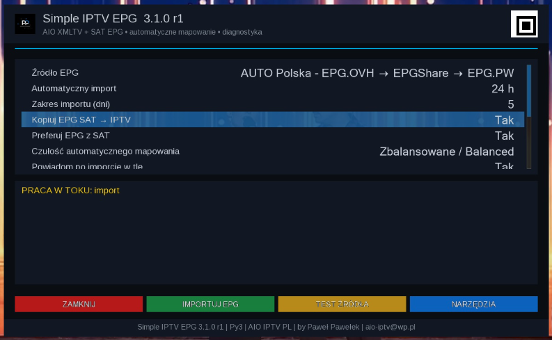

Witam na mojej stronie Paweł Pawełek
EPG dla IPTV • BouquetMakerXtream • XMLTV • diagnostyka
Simple IPTV EPG 3.1.0 r1
Simple IPTV EPG 3.1.0 r1 rozwija obsługę EPG dla list IPTV: poprawia import wydarzeń do Enigma2, lepiej wykorzystuje mapowania BouquetMakerXtream i XMLTV, obsługuje różne referencje usług IPTV oraz rozbudowuje diagnostykę i bezpieczeństwo pracy ze źródłami EPG.

Najważniejsze informacje
Wersja: 3.1.0 r1
Pakiet: enigma2-plugin-extensions-simpleiptvepg_3.1.0-r1_all.ipk
Rozmiar: 51.3 KB
Wydanie: 09.10.2026
Platforma: Enigma2 • kod uporządkowany pod Python 2 / Python 3
Pakiet deklaruje: Depends: enigma2
Autor: Paweł Pawełek / AIO IPTV PL
SHA-256: 1a09ee01b7fa296615ca4133f6b4f357328fa39b73a0bb23677277735c8a17ff
Co zmienia 3.1.0 r1?
- poprawione wywołanie
eEPGCache.importEventsi stabilniejsze wstrzykiwanie wydarzeń do EPG Enigma2 - automatyczne wykrywanie źródeł BouquetMakerXtream z
/etc/epgimport - odczyt oryginalnego mapowania XMLTV ID → rzeczywista referencja kanału IPTV
- zgodność z referencjami usług IPTV m.in.
4097,5001i5002 - mapowanie BouquetMakerXtream ma pierwszeństwo przed dopasowaniem kanału po nazwie
- lepsza obsługa XMLTV / XMLTV.GZ, również gdy skompresowane dane zwraca adres typu
xmltv.php - mniejsze zużycie pamięci przy analizie dużych plików XMLTV
- rozbudowana diagnostyka BMX, raport dopasowań i próbna kontrola widoczności EPG
- maskowanie danych dostawcy w logach oraz ochrona aktualizatora przed niezamierzonym cofnięciem wersji
🔍 Pełny audyt techniczny
Wersja 3.0.0 powstała po analizie architektury kodu, pobierania EPG, mapowania kanałów, parsera XMLTV, cache, integracji z eEPGCache, wykorzystania EPG satelitarnego, pracy w tle, aktualizacji, diagnostyki oraz interfejsu. Celem była nie tylko zmiana wyglądu, lecz zbudowanie stabilniejszej bazy pod dalszy rozwój.
🎨 Nowy interfejs
Główne funkcje są dostępne bez przeszukiwania wielu ekranów. Interfejs został ujednolicony z rodziną AIO i zachowuje czytelny podział na źródło, import, test i narzędzia.
- 🔴 Czerwony — wyjście
- 🟢 Zielony — import EPG
- 🟡 Żółty — test źródła
- 🔵 Niebieski / MENU — narzędzia
- ℹ️ INFO — informacje
- ✅ OK — zapis ustawień
📺 Do czego służy Simple IPTV EPG?
- pobiera i analizuje dane XMLTV
- analizuje dostępne kanały IPTV
- automatycznie dopasowuje kanały IPTV do danych EPG
- wykorzystuje
tvg-id,epg_idixmltv_id, jeśli są dostępne - dopasowuje kanały również po nazwach
- importuje wydarzenia do systemowego EPG Enigma2
- może wykorzystać EPG kanałów satelitarnych jako źródło pomocnicze
- automatycznie odnawia EPG i przechowuje cache mapowania
- udostępnia narzędzia diagnostyczne do analizy problemów z importem
🔗 BouquetMakerXtream — mapowanie EPG dostawcy
Wersja 3.1.0 r1 potrafi odczytać pliki bouquetmakerxtream*.sources.xml oraz odpowiadające im *.channels.xml z katalogu /etc/epgimport. Dzięki temu może wykorzystać oryginalne XMLTV ID dostawcy i przypisać je do rzeczywistych referencji kanałów IPTV zapisanych na tunerze.
Istniejące mapowanie BMX ma pierwszeństwo przed dopasowaniem po nazwie. Zmniejsza to ryzyko przypisania programu do niewłaściwego kanału, szczególnie przy podobnych nazwach stacji.
🧠 Nowy AutoMapper
Najpierw wyszukiwany jest dokładny identyfikator kanału: tvg-id, epg_id lub xmltv_id. Dopiero gdy identyfikatora nie ma, mechanizm przechodzi do dopasowania nazw.
Najbardziej restrykcyjne dopasowanie. Minimalizuje ryzyko błędnego przypisania.
Tryb domyślny — kompromis między dokładnością a skutecznością.
Bardziej elastyczne dopasowanie nazw dla trudniejszych list IPTV.
Poprawiony fuzzy matching nie wybiera kanału „na siłę”, gdy dwa wyniki są niemal identyczne. W takiej sytuacji lepiej pozostawić kanał bez EPG niż przypisać program niewłaściwej stacji.
📡 EPG SAT → IPTV
Wtyczka może preferować dane EPG dostępne z kanału satelitarnego dla odpowiadającego mu kanału IPTV. Obecność danych SAT nie blokuje jednak budowania mapowania XMLTV. Gdy EPG satelitarne zniknie, kanał może wrócić do XMLTV bez przebudowy całego systemu mapowania.
🔄 Nowy system cache
Cache mapowania uwzględnia teraz rzeczywiście użyte źródło XMLTV, dokładny adres, aktualny zestaw kanałów IPTV oraz poziom AutoMappera. Przejście na zapasowe źródło nie powinno więc automatycznie używać starego mapowania przygotowanego dla innego dostawcy EPG.
🧩 Modułowa architektura
Kod został podzielony na warstwy odpowiedzialne za GUI, AutoMapper, źródła EPG, parser XMLTV, cache i stan, worker, diagnostykę, kompatybilność oraz główną logikę. Ułatwia to rozwój i diagnozowanie usterek.
⚡ Stabilniejsza praca
Pobieranie XMLTV, parsowanie, analiza kanałów i budowanie mapowania może odbywać się w tle. Operacje bezpośrednio związane z eEPGCache, eServiceCenter, importEvents() i usługami Enigma2 są przekazywane do głównego wątku GUI.
🗂 Lepszy parser XMLTV
- obsługa XML namespace
- różne formaty czasu i strefy czasowe
- kategorie oraz opisy wydarzeń
- pliki GZIP i duże dokumenty XMLTV, także gdy kompresję zwraca endpoint bez rozszerzenia
.gz - pełna walidacja root
<tv>, kanałów, wydarzeń, poprawności XML i kompletności strumienia
Uszkodzony lub niedokończony dokument nie powinien być uznawany za prawidłowe źródło EPG.
🧪 Test źródła przed importem
Żółty przycisk umożliwia sprawdzenie źródła bez wykonywania pełnego importu. Test weryfikuje odpowiedź serwera, obecność XMLTV, liczbę kanałów, występowanie wydarzeń i integralność danych.
🛠 Narzędzia administracyjne
- pełny import wraz z przebudową mapowania
- samo przebudowanie mapowania
- diagnostyka i podgląd logu
- sprawdzenie aktualizacji oraz aktualizacja wtyczki
- czyszczenie cache mapowania
- czyszczenie plików tymczasowych
🕒 Automatyczne odnawianie EPG
Scheduler może wykonywać import co 6, 12, 24 lub 48 godzin. Można również ustawić opóźnienie pierwszego importu po uruchomieniu Enigma2. Dodano zabezpieczenie przed zapętlaniem ciężkich importów, gdy źródło jest chwilowo niedostępne.
📊 Diagnostyka
Wtyczka zapisuje informacje o ostatnim uruchomieniu i poprawnym imporcie, użytym źródle, liczbie kanałów IPTV/SAT/XMLTV, liczbie zaimportowanych wydarzeń, błędach eEPGCache, cache mapowania i stanie workera.
/tmp/simpleiptvepg.log⚠️ Koniec z fałszywym „Import zakończony”
Jeżeli operacja technicznie kończy się bez wyjątku, ale do systemowego EPG trafiło 0 wydarzeń, wersja 3.0.0 oznacza import jako nieudany. Użytkownik otrzymuje informację o problemie zamiast pozornego sukcesu.
🔐 Pobieranie i aktualizacje
Usunięto rozwiązania wyłączające weryfikację certyfikatów TLS. Mechanizm pobierania źródeł i aktualizacji nie powinien obniżać bezpieczeństwa połączenia tylko po to, aby wymusić transfer.
🐍 Python 2 / Python 3
Kod został uporządkowany pod kątem starszych i nowszych środowisk Enigma2: ograniczono konstrukcje utrudniające zgodność i wydzielono warstwę kompatybilności. Faktyczna zgodność nadal zależy od konkretnego image i dostępnych komponentów Enigma2.
🔧 Co poprawia 3.1.0 r1?
Build 3.1.0 r1 skupia się na rzeczywistym dopasowaniu EPG do kanałów IPTV. Poprawiono sposób przekazywania referencji usług do eEPGCache, dodano automatyczne mapowanie BouquetMakerXtream, obsługę różnych typów referencji IPTV oraz dokładniejszą kontrolę tego, czy EPG po imporcie jest faktycznie widoczne na tunerze.
🖼️ Podgląd 3.1.0 r1
📌 Najważniejsze zmiany w Simple IPTV EPG 3.1.0 r1
- kompletny audyt poprzedniej wersji i całkowicie nowy interfejs
- nowy AutoMapper z priorytetem dla identyfikatorów i trzema poziomami dokładności
- wykrywanie niejednoznacznych dopasowań i poprawiony fuzzy matching
- przebudowany cache zależny od faktycznego źródła XMLTV
- lepszy fallback źródeł oraz SAT → IPTV
- stabilniejsza integracja z
eEPGCachei głównym wątkiem GUI - rozbudowany parser XMLTV, namespace, strefy czasowe i pełna walidacja
- test źródła, scheduler, diagnostyka, logi i ręczna przebudowa mapowania
- brak wyłączania weryfikacji TLS
- import 0 wydarzeń jest traktowany jako błąd
- r1: poprawka warstw
zPositionna ekranach
📥 Instalacja
Możesz użyć instalatora online albo pobrać IPK i wgrać go do /tmp.
wget -qO - https://raw.githubusercontent.com/OliOli2013/SimpleIPTV_EPG/main/installer.sh | /bin/shopkg install /tmp/enigma2-plugin-extensions-simpleiptvepg_3.1.0-r1_all.ipkPo instalacji zalecany jest restart GUI Enigma2.
Simple IPTV EPG 3.1.0 r1
Wersja 3.1.0 r1 rozwija przebudowaną bazę 3.x i koncentruje się na dokładniejszym mapowaniu kanałów IPTV, integracji z BouquetMakerXtream, stabilnym imporcie XMLTV oraz łatwiejszej diagnostyce rzeczywistych problemów z EPG.
Paweł Pawełek • AIO IPTV PL • aio-iptv@wp.pl